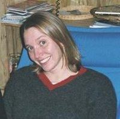
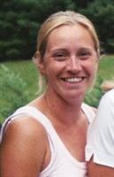
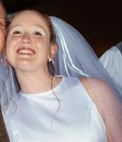

HOME
OUR STORY
EVENTS
ACCOMMODATIONS
PHOTO ALBUM
WEDDING PARTY
REGISTRY
HONEYMOON
GUEST BOOK
TAKE QUIZ
OUR CALENDAR
|
| Brooke |
|---|
|
Maid of Honor  Brooke and I grew up playing together and fighting quite a bit. She is my sister and now one of my best friends. She is engaged too so we get to go through the wedding planning experience together. What a great thing to share! |
| Rachel |
|
Maid of Honor Rachel is another best friend. She is also my sister. I feel like every year we grow closer and closer. Knowing that I can call her when I'm happy or sad means a lot to me. Knowing that she is in my wedding means even more. |
| Laura |
|
Bridesmaid  My third sister! Yet again a sister and friend! It seems that Laura is always laughing and enjoying life. One of my favorite things to do with Laura is skiing. My goal is to smile as much and maybe one day to ski as fast as she does. |
| Brenna |
|
Bridesmaid She is my youngest sister and I just can't believe that there are thirteen years between us! I love being a sister and friend of Brenna's. She keeps me young and keeps me laughing. She is also a great person to go shopping with. |
| Kate |
|
Bridesmaid Over the years people have asked us many times if we were cousins or sisters. It is sometimes hard to beleive that we are neither, just great friends. I have known Kate for as long as I can remember. Has it been mentioned that I wouldn't have met Kirby if I hadn't known Kate? :) |
| Dave |
|
Best Man Dave is the strongest and most incredible individual I know. He has taught me a lot of life lessons since we first met a few years back. And I can't think of a better person to have as my best man. |
| Renay |
|
Groomsperson  Renay is the best sister a guy like me could have and I am very excited to have her as a groomsperson. But I'm not sure about inviting her to the bachelor's party. |
| Joe |
|
Groomsperson I'm very excited to have Joe as a gooms person. And even though he is only an okay snowboarder, he is a great friend. |
| Shawn |
|
Groomsperson Shawn has years of experienced with Bryn Athyn weddings. And it is only fitting that he be in our's. I think he will be the only one in the wedding party who knows all the words to the BA songs. |